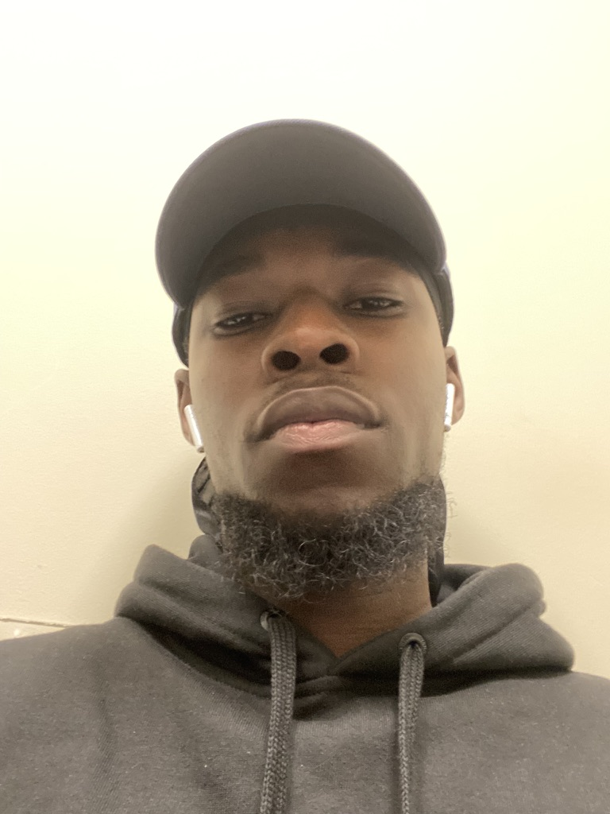

About Me
My name is Melvyn Fokuoh. I'm a screenwriter and an aspiring web developper. I joined this program initially for design, but I have already pivoted towards programming. It has so far been my favourite course in the IMD program and I'm hoping to learn more and advance my skills. I'm aiming to do some self-learning on the side as well.
At first I was wondering why I was instantly drawn to programming, then I realized it was the same reason I love screenwriting: the creation of a blueprint. Because I'm a screenwriter, many people are surprised to hear that I don't like any other type of writing, other than music writing. All three forms are essentially a blueprint before they are consumed by people in a different form visually and/or sonically.
Peace comes from within; do not seek it without. Buddha
Hobbies
- Movies
- Philosophy